측량및지형공간정보기사 (2005-03-20 기출문제)
1과목: 측지학 및 위성측위시스템
1. 천문좌표계에서 어떤 시각의 별의 위치를 적경(α)와 적위 (δ)로 나타내는 좌표는?
- 지평좌표
- 황도좌표
- 적도좌표
- 시각좌표
(정답률: 59%)

2. 지구타원체상 한 점의 법선을 포함하며, 그 점을 지나는 자오면과 직교하는 평면과 타원체면과의 교선은?
- 항정선(Loxodrome)
- 측지선(Geodetic line)
- 묘유선(Prime vertical)
- 평행권(Parallel line)
(정답률: 70%)
3. 다음의 GPS 오차원인 중 L1신호와 L2신호의 굴절 비율의 상이함을 이용하여 L1/L2의 선형 조합을 통해 보정이 가능한 것은?
- 전리층 지연오차
- 위성시계오차
- GPS 안테나의 구심오차
- 다중전파경로(멀티패스)
(정답률: 75%)
4. 중앙 경간 1,000m인 현수교의 두 주탑을 연직으로 세우면 두 주탑간의 각도는 대략 어느정도 되는가? (단, 지구를 반경 6370km의 구로 가정한다.)
- 8″
- 16″
- 32″
- 64″
(정답률: 25%)
5. GPS 수신기에 의해 구해지는 높이 값은?
- 지오이드고
- 표고
- 비고
- 타원체고
(정답률: 64%)
6. 지구의 공전에 의한 현상으로 옳은 것은?
- 태양의 남중고도의 변화가 생긴다.
- 밤과 낮이 생긴다.
- 조석현상이 생긴다.
- 운동하는 물체에 전향력이 생긴다.
(정답률: 75%)
7. 1등 삼각망이 설치된 지역내에 새로운 1개의 2등 삼각점을 신설하는 경우에 필요하지 않은 측량 작업은?
- 성과표 이기
- 기선 측정
- 각 측정
- 삼각수준측량
(정답률: 37%)
8. 다음 내용중 옳지 않은 것은?
- 이심율과 편평률은 같다.
- 변장 30km를 측정할 때 측각정확도를 0.7"로 하면 10cm정도의 위치오차가 생긴다.
- 편평률은 타원의 장반경과 단반경이 주어지면 구할 수 있다.
- 어느 지역의 측지계의 기준이 되는 지구 타원체를 준거 타원체라 한다.
(정답률: 알수없음)
9. 측지선의 설명으로 맞는 것은?
- 측지선은 직접 관측만으로 구하여야 한다.
- 측지선으로 이루어지는 삼각형은 수치적인 계산으로는 구할 수 없다.
- 평면곡선과 측지선의 길이의 차는 대단히 크다.
- 지표상 두 점간의 최단 거리선이다.
(정답률: 60%)
10. 구상의 어느 한점에서 지오이드에 대한 연직선이 천구의 적도면과 이루는 각으로 정의되는 위도는?
- 측지위도
- 지심위도
- 천문위도
- 화성위도
(정답률: 60%)
11. 다음중 물리학적 측지학에 속하지 않는 것은?
- 탄성파 측정
- 지자기 측정
- 중력측정
- 사진측정
(정답률: 60%)
12. GPS 측량에 있어 사이클슬립(주파단절)의 주된 원인은?
- 위성의 높은 고도각
- 나무, 터널 등의 상공 시계 불량
- 낮은 신호 잡음
- 높은 신호 강도
(정답률: 64%)
13. 자북에서의 복각은 얼마인가?
- 0도
- 90도
- 30도
- 45도
(정답률: 34%)
14. 다음 설명 중 틀린 것은?
- 중력은 인력과 원심력의 합력이다.
- 중력방향은 항상 지구중심을 향한다.
- 지구의 정확한 형상을 결정하는데 중력측정은 필수적이다.
- 실측된 중력값과 표준 중력식에 의한 값의 차이를 중력이상이라 한다.
(정답률: 42%)
15. 중력이상의 주된 원인은?
- 화산폭발
- 태양과 달의 인력
- 지구의 자전 및 공전
- 지구내부의 물질분포나 지형의 영향
(정답률: 62%)
16. 기종이 서로 다른 GPS 수신기를 혼합하여 관측하였을 경우 수집된 GPS 데이터의 기선 해석이 용이하도록 고안된 세계 표준의 GPS 데이터의 자료형식은?
- RINEX
- DXF
- DWG
- RTCM
(정답률: 62%)
17. 인공위성을 이용한 범지구적 위치결정 시스템으로 NNSS와 교체된 항행시스템은?
- SPOT
- LORAN
- GPS
- OMEGA
(정답률: 70%)
18. 다음중 인공위성의 궤도 요소에 해당되지 않는 것은?
- 장반경
- 근지점 인수
- 인공위성 무게
- 궤도 경사각
(정답률: 64%)
19. 지구의 부피, 표면적, 반경, 표준중력, 삼각측량 및 지도 제작 등에 기준이 되는 지구의 형상은?
- 물리적지구표면
- 지구타원체
- 지오이드
- 구체
(정답률: 60%)
20. 준성(quasar)으로부터 발생되는 전파를 이용하여 수평위치를 결정하는 측량 방법은?
- GPS(Global Positioning System)
- SLR(Satellite Laser Ranging)
- VLBI(Very Long Baseline Interferometry)
- LLR(Lunar Laser Ranging)
(정답률: 70%)
2과목: 응용측량
21. 곡선 설치시 동일한 조건에서 곡선 반경만을 1/2로 줄였을 때 캔트(cant)의 값은 몇 배가 되는가?
- 1/2배
- 1배
- 2배
- 4배
(정답률: 60%)
22. 다음 그림과 같은 삼각형의 면적은?
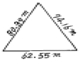
- 2199.0m2
- 2199.5m2
- 4835.6m2
- 3199.9m2
(정답률: 62%)
23. 도로 종단측량에 의한 종단면도작성에서 기입사항과 가장 거리가 먼 것은?
- 측점간의 수평거리
- 각 측점의 지반고 및 B.M. 점의 높이
- 횡단방향 지반고 및 중심말뚝간의 거리
- 측점에서의 계획고
(정답률: 알수없음)
24. 하천, 항만 등에서 심천측량을 한 결과의 지형을 표시하는 방법중 알맞는 것은?
- 점고법
- 음영법
- 지모법
- 등고선법
(정답률: 46%)
25. 지적측량 중에서 도시 계획, 농지개량, 토지구획정리사업등에 의해 토지를 구획하기 위해 실시되는 측량으로 세부측량에서도 정확하게 실시되는 측량은?
- 지적 확정 측량
- 경계 정정 측량
- 경계 감정 측량
- 분할 측량
(정답률: 70%)
26. 다음 중 완화곡선으로 부적당한 것은?
- 클로소이드곡선
- 3차 포물선
- 렘니스케이트곡선
- 복심곡선
(정답률: 39%)
27. 하천의 양수표 설치장소로 부적당한 곳은?
- 하상과 하안이 안전하고 세굴과 퇴적이 생기지 않는 곳
- 상하류 약 100m는 직선인 곳
- 지천의 합류점인 곳
- 수위가 교각 및 그 밖의 구조물로 인하여 영향을 받지 않는 곳
(정답률: 40%)
28. 그림과 같은 단면의 면적은 얼마인가?
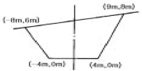
- 78m2
- 80m2
- 87m2
- 90m2
(정답률: 67%)
29. 교각 I=90°, 곡선반경 R=150m인 단곡선의 교점(I.P.)의 추가거리가 1125.50m일 때 곡선 시점(B.C.)의 추가거리는?
- 775.5m
- 865.5m
- 975.5m
- 1065.5m
(정답률: 0%)
30. 하천 측량에서 평면측량의 범위는?
- 유제부에서 제내지 및 제외지 300m이내, 무제부에서는 홍수가 영향을 주는 구역보다 약간 넓게 한다.
- 유제부에서 제내지 및 제외지 200m이내, 무제부에서는 홍수가 영향을 주는 구역보다 약간 좁게 한다.
- 유제부에서 제내지 및 제외지 200m이내, 무제부에서는 홍수가 영향을 주는 구역보다 약간 넓게 한다.
- 유제부에서 제내지 및 제외지 300m이내, 무제부에서는 홍수가 영향을 주는 구역보다 약간 좁게 한다.
(정답률: 알수없음)
31. 정방형의 토지를 50m 테이프로 측정하여 면적을 구하였더니 750m2의 결과를 얻었다. 그런데 이 테이프가 50m에 10cm가 늘어나 있다면 실제의 면적은 얼마인가?
- 751m2
- 752m2
- 753m2
- 754m2
(정답률: 54%)
32. 수평 및 수직거리에 대한 관측의 정확도가 일정할 때 다음 설명 중 옳은 것은?
- 면적측량의 정확도는 거리관측 정확도의 3배이다.
- 체적측량의 정확도는 거리관측 정확도의 3배이다.
- 면적측량의 정확도는 거리관측 정확도의 1/3배이다.
- 체적측량의 정확도는 거리관측 정확도의 1/3배이다.
(정답률: 알수없음)
33. 도로의 중심선을 따라 20m 간격으로 종단측량을 하여 다음과 같은 결과를 얻었다. 측점 No.1의 계획고를 115m로 하고 3% 상향구배의 도로를 시공하고자 할 때, 측점 No.3의 성토고는?
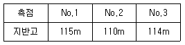
- 1.0m
- 1.6m
- 2.2m
- 2.8m
(정답률: 8%)
34. 기존 노선의 양접선은 변하지 않고 R2 = 300m인 신곡선을 설치할 경우 신곡선의 곡선중점은 구곡선의 곡선중점에서 얼마를 이동시켜야 하는가?
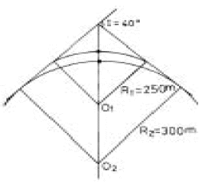
- 3.209m
- 5.235m
- 4.439m
- 6.028m
(정답률: 59%)
35. 수심이 h인 하천의 유속을 측정하기 위해 수면에서 0.2h, 0.6h, 0.8h 깊이 지점의 유속이 0.88m/sec, 0.62m/sec, 0.43m/sec일 때 평균 유속은?
- 0.635m/sec
- 0.638m/sec
- 0.62m/sec
- 0.655m/sec
(정답률: 40%)
36. 하천측량의 수애선(水涯線) 측량에 관한 내용 중 틀린 것은?
- 수애선은 수면과 하안의 경계선이다.
- 수애선은 하천수위 최저수위에 의해 정해진다.
- 수애선은 하천수위변화에 따라 변동한다.
- 수애선측량은 동시 관측에 의한 방법이 있다.
(정답률: 50%)
37. 경관은 구성요소에 의하여 대상계, 경관장계, 시점계, 상호성계로 분류된다. 이중 사물의 규모, 상태, 형상 및 배치를 뜻하는 것은?
- 대상계
- 경관장계
- 시점계
- 상호성계
(정답률: 알수없음)
38. 터널측량에서 지표 중심선 측량방법과 직접적인 관련이 없는 것은?
- 레벨에 의한 측설법
- 트랜싯에 의한 측설법
- 트래버스측량에 의한 측설법
- 삼각측량에 의한 측설법
(정답률: 67%)
39. 부자에 의해 유속을 측정할 경우 유하거리에 ±0.1m 오차와 관측시간에 ±0.5초의 오차가 허용된다면 관측유속 1m/sec인 경우 그 오차를 2% 이하로 하기 위한 최소 유하거리는?
- 10m
- 20m
- 25.5m
- 30m
(정답률: 37%)
40. 노선측량의 일반적인 작업 순서로서 알맞은 것은?
- 도상계획→답사→지형측량→공사측량
- 답사→도상계획→공사측량→지형측량
- 답사→공사측량→도상계획→지형측량
- 도상계획→지형측량→답사→공사측량
(정답률: 67%)
3과목: 사진측량 및 원격탐사
41. 항공삼각측량에서 절대 좌표로 환산할 때 계산단위가 되는 사진, 입체모형, 스트립에 따라서 분류할 수 있다. 이 중 사진을 기본 단위로 조정하는 방법은?
- 광속조정법(bundle adjustment)
- 독립모델법(independent model triangulation)
- 다항식법(polynomial method)
- 템플리트법(templet method)
(정답률: 16%)
42. 초점거리 155mm 카메라로 해면고도 2600m의 비행기로부터 평균표고 265m의 평지를 촬영한다면 사진축척은?
- 1/18,548
- 1/16,774
- 1/15,065
- 1/14,774
(정답률: 17%)
43. 자료의 표준화에 많이 사용되는 "자료에 대한 자료"를 뜻하는 용어는?
- 검증데이터
- 메타데이터
- 표준데이터
- 메가데이터
(정답률: 67%)
44. 축척 1/30,000의 항공사진을 C-계수(C-factor)가 1500인 도화기로써 도화작업을 할 때에 신뢰할 수 있는 최소 등고선의 간격은? (단, 사진의 초점거리는 150mm이다.)
- 2.5m
- 3.0m
- 5.0m
- 10.0m
(정답률: 60%)
45. 다음의 chain-code를 가장 정확히 나타낸 것은? (단, 0-동, 1-북, 2-서, 3-남의 방향을 표시한다.)
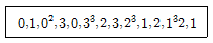
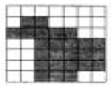
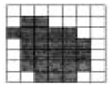
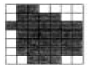
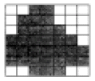
(정답률: 64%)
46. 입체시된 항공사진상에서 지형의 과고감은?
- 실제 과고감보다 과대하게 나타난다.
- 실제 과고감보다 과소하게 나타난다.
- 실제와 동일하다.
- 입체경의 종류에 따라 다르다.
(정답률: 62%)
47. 다음 탐측기 중 수동적 탐측기(Passive Sensor)는?
- 레이저 스캐너(Laser scanner)
- 다중분광스캐너(Multispectral scanner)
- 레이더 고도계(Radar altimeter)
- 영상 레이더(SLAR)
(정답률: 60%)
48. 초점거리 30cm의 사진기로 찍은 축척 1/20000 항공사진의 연직점에서 80mm 떨어진 곳에 있는 높이 120m인 탑의 사진상 변위는?
- 약 1.4mm
- 약 1.6mm
- 약 1.8mm
- 약 2.0mm
(정답률: 40%)
49. 기존의 도면을 스캐닝하여 얻어진 격자형태의 자료에 대하여 적당한 소프트웨어를 사용하여 입력된 도면의 선을 수동, 반자동 또는 자동방식으로 추적하여 벡터자료를 획득하는 방법은?
- 래스터라이징
- 벡터라이징
- 디지타이징
- 커스터마이징
(정답률: 알수없음)
50. 피사각이 90°로 일반도화, 판독용으로 주로 활용되는 사진기는?
- 광각사진기
- 보통각사진기
- 초광각사진기
- 협각사진기
(정답률: 50%)
51. 항공사진에서 일반적으로 택하는 종중복도는?
- 45%
- 50%
- 60%
- 80%
(정답률: 75%)
52. 원격 탐사(Remote sensing)에 대한 설명 중 옳지 않은 것은?
- 자료가 대단히 많으며 불필요한 자료가 포함되는 경우가 있다.
- 물체의 반사 스펙트럼 특성을 이용하여 대상물의 정보추출이 가능하다.
- 고고도에서 좁은 시야각에 의하여 촬영되므로 중심투영에 가까운 영상이 촬영된다.
- 자료 취득 방법에 따라 수동적 센서에 의한 것과 능동적 센서에 의한 방법으로 분류할 수 있다.
(정답률: 59%)
53. 지형분석, 토지의 이용, 개발, 행정, 다목적 지적 등 토지 자원에 관련된 문제 해결을 위한 정보분석체계는?
- 환경정보체계(EIS)
- 토지정보체계(LIS)
- 도시정보체계(UIS)
- 시설물정보체계(FM)
(정답률: 알수없음)
54. 인접한 2개의 사진 및 입체모형에 공통적인 요소를 이용하여 입체모형의 경사와 축척을 통일시켜 1개의 통일된 스트립의 좌표계로 변환하는 작업은?
- 내부표정
- 상호표정
- 접합표정
- 절대표정
(정답률: 59%)
55. 초점거리 210mm, 사진크기 18cm×18cm, 종중복도 60% 일때 기선고도비는?
- 0.34
- 0.47
- 0.51
- 0.70
(정답률: 19%)
56. 다음 중 격자 구조의 자료를 압축 저장하는 방법이 아닌 것은?
- Run-length code 기법
- Chain code 기법
- Quad-tree 기법
- Polynomial 기법
(정답률: 60%)
57. 항공사진의 편위를 모두 수정하여 집성한 사진지도로써 지도와 동일한 위치관계를 가지고 있는 사진지도는?
- 약조정집성 사진지도
- 조정집성 사진지도
- 반조정집성 사진지도
- 정사투영 사진지도
(정답률: 37%)
58. 벡터구조로서 지형데이터의 표현을 위한 위상을 갖추고 있는 수치표고자료의 표현방식은?
- 불규칙삼각망(TIN)
- 수치고도모형(DEM)
- 수치표면모형(DSM)
- 수치선형그래프(DLG)
(정답률: 50%)
59. 동서 20km, 남북 10km의 정방형 구역에서 축척 1/5000의 항공사진 한장의 입체모형에 찍힌 면적을 3.57km2이라 할때 이 지역에 필요한 사진의 매수는? (단, 안전율은 1.3이다)
- 94매
- 73매
- 57매
- 35매
(정답률: 20%)
60. 다음 중 수치영상의 영상변환 방법이 아닌 것은?
- 푸리에(Fourier) 변환
- 발쉬(Walsh) 변환
- 호텔링(Hotelling) 변환
- 특성(Character) 변환
(정답률: 34%)
4과목: 지리정보시스템
61. 다음 등고선의 성질 중 옳지 않은 것은?
- 등고선은 분기하지 않고 절벽이나 동굴의 지형 이외에 는 교차하지 않는다.
- 동일 등고선 상의 모든 점은 기준면상 같은 높이에 있다.
- 등고선은 하천, 호수, 계곡 등에서는 단절되고 도상에서 폐합하는 일이 없다.
- 등고선은 능선 또는 계곡선과 직각으로 만난다.
(정답률: 84%)
62. 그림에서 ∠ACD = ∠ABC = 90°, BC = 30m, BD = 15m이다. 하폭 AB 는?
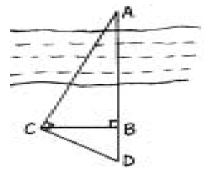
- 40m
- 50m
- 60m
- 70m
(정답률: 54%)
63. GPS의 주요구성 중 궤도와 시각 결정을 위한 위성 추적을 담당하는 부분은?
- 우주 부분
- 제어 부분
- 사용자 부분
- 위성 부분
(정답률: 알수없음)
64. 같은 각을 측량한 결과가 1회만 측량한 경우 50°40′38″, 4회 측량한 평균이 50°40′21″, 9회 측량한 평균이 50°40′30″ 였다면 이 각의 최확값은?
- 50°40′28″
- 50°40′29″
- 50°40′30″
- 50°40′34″
(정답률: 46%)
65. 다음 중 최소제곱법의 원리를 이용하여 처리할 수 있는 오차는?
- 정오차
- 우연오차
- 누차
- 계통오차
(정답률: 80%)
66. 평판측량에서 평판을 세울 때의 오차 중 측량결과에 가장 큰 영향을 주는 오차는?
- 방향맞추기 오차
- 중심맞추기 오차
- 수평맞추기 오차
- 수직맞추기 오차
(정답률: 65%)
67. 다음 그림과 같은 편심관측에서 T'는 얼마인가? (단, S1 = S2 = 2Km, e=0.2m, ø=120°, T=60°)
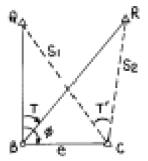
- 59°59' 43"
- 60°00' 00"
- 60°00' 17"
- 60°00' 34"
(정답률: 70%)
68. 평판측량에 있어서 연직으로 세운 2.4m 폴 상하부 시준선에 앨리데이드로 측정하여 눈금수가 6 이었다. 평판과 폴사이의 수평거리는 얼마인가?
- 2.5m
- 14.4m
- 25m
- 40m
(정답률: 30%)
69. 다음 중 1차원 대상물의 양식이 아닌 것은?
- 영상소(pixel)
- 선분
- 연결선(link)
- 사슬(chain)
(정답률: 50%)
70. 북쪽을 X축으로 하는 좌표계에서 P1 점 및 P2 점의 좌표가 x1 = -11328.58m, y1 = -4891.49m, x2 = -11616.10m, y2 =-5240.83m일 때 P1P2의 평면거리 S 와 방향각 T는?
- S = 549.73m, T = 129°27′21″
- S = 452.44m, T = 50°32′40″
- S = 452.44m, T = 230°32′40″
- S = 549.73m, T = 309°27′21″
(정답률: 알수없음)
71. 정사각형의 땅을 30m짜리 테이프를 사용하여 측정한 결과 900m2을 얻었다. 이때 테이프가 실제보다 5cm가 늘어나 있었다면 실제면적은?
- 897m2
- 898.5m2
- 901.5m2
- 903m2
(정답률: 58%)
72. 다음 중 GPS에서 이용되는 좌표체계는?
- WGS 68
- WGS 72
- WGS 84
- WGS 94
(정답률: 64%)
73. A, B 두점간의 고저차를 구하기 위하여 그림과 같이 (1), (2), (3) 코스로 수준측량한 결과가 다음과 같을 때 두 점간의 고저차에 대한 최확값은?
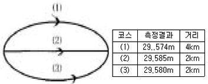
- 29.567m
- 29.581m
- 29.569m
- 27.578m
(정답률: 알수없음)
74. 지형측량의 결과인 등고선도의 이용과 가장 거리가 먼 것은?
- 지적도의 작성
- 노선의 도상선정
- 성토, 절토의 범위결정
- 집수면적의 측정
(정답률: 40%)
75. 그림과 같은 측량결과를 얻었을 때 이 지형의 토공량은? (단, 계획고는 0m로 함)
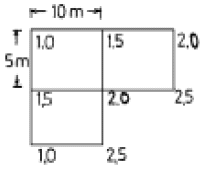
- 293.5m3
- 283.5m3
- 273.5m3
- 262.5m3
(정답률: 0%)
76. 다음 중 수평각관측 방법에 대한 설명으로 틀린 것은?
- 단각법은 하나의 각을 1번 관측하는 것으로 시준오차와 읽기오차가 발생된다.
- 배각법은 방위각법에 비해 읽기오차가 크다.
- 각관측법은 수평각 관측법 중 가장 정확한 값을 얻을 수 있다.
- 방위각법은 한 측점 주위의 각이 많을 경우 이용하는 방법으로 삼각측량 및 천문측량에 많이 이용된다.
(정답률: 0%)
77. 지형공간정보체계를 이루는 지형공간정보는 위치정보와 특성정보로 구분할 수 있다. 특성정보 중 대상물의 자연, 인문, 사회, 행정, 경제, 환경적 특징을 나타내는 정보로서 지형공간적 분석이 가능하도록 하는 도형 및 영상정보와 관련된 정보는?
- 지형정보
- 도형정보
- 영상정보
- 속성정보
(정답률: 알수없음)
78. 다음은 지도투영시 일어나는 왜곡에 관한 설명으로 옳지 않은 것은?
- 각이나 면적 등을 곡면에서 평면으로 변환할 때 왜곡이 일어나며 투영은 필연적으로 왜곡을 동반한다.
- 여러 가지의 왜곡을 단일 투영으로 모두 바로 잡을 수는 없으며, 투영법의 선택에 따라 왜곡특성이 변한다.
- 주로 하나의 요소에 대한 왜곡이 최소화되면 그 동안 다른 요소들에 대한 왜곡도 어느 정도 보정이 된다.
- 투영에서 왜곡의 영향을 알아 보기 위해서 지시원을 이용한다.
(정답률: 55%)
79. 기지점 A에서 미지점 B까지의 거리와 방위각을 측정한 결과가 다음과 같았다. B점의 좌표는 얼마인가?
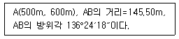
- (600.330, 494.624)
- (494.624, 600.330)
- (700.330, 394.624)
- (394.624, 700.330)
(정답률: 60%)
80. 해안선(표고 0m)에서 눈높이 150cm인 사람이 수평선을 바라볼 때 수평선까지의 거리는 약 얼마인가? (단, 양차를 고려하고, 지구반경 R=6,370km, 굴절계수 k=0.14임)
- 4.7km
- 5.7km
- 6.7km
- 8.7km
(정답률: 40%)
5과목: 측량학
81. 학사학위를 가진자로서 12년이상 측량업무를 수행한 학력경력자의 기술등급은?
- 특급기술자
- 고급기술자
- 중급기술자
- 고급기능자
(정답률: 50%)
82. 건설교통부장관이 실시하여야 할 새로운 측량기술의 연구 개발 및 도입 등에 필요한 시책이 아닌 것은?
- 정밀측량기기의 개발
- 측량품셈의 개선,보완
- 지도제작기술의 개발 및 자동화
- 수치지형정보의 표준화
(정답률: 47%)
83. 중앙지명위원회의 구성에 대한 설명으로 틀린 것은?
- 위원장은 국토지리정보원장이 된다.
- 국토지리정보원에 중앙지명위원회를 둔다.
- 위원장 및 부위원장 각 1인을 포함한 20인 이내의 위원으로 구성한다.
- 부위원장은 국토지리정보원 지도과장이 된다.
(정답률: 46%)
84. 기본측량의 성과를 사용하여 지도를 간행하고자 하는 경우 지도에 명시할 사항이 아닌 것은?
- 측량기술자 명단
- 사용한 측량성과의 정확도
- 사용한 측량 성과
- 측량 기록의 종류
(정답률: 알수없음)
85. 공공측량에 관한 설명으로 잘못된 것은?
- 선행된 공공측량의 성과를 기초로 측량을 실시할 수 있다.
- 선행된 기본측량의 성과를 기초로 측량을 실시할 수 있다.
- 공공측량의 성과를 교부 받고자하는 자는 국토지리정보 원장에게 신청하여야 한다.
- 공공측량을 실시하기 위하여 타인의 토지나 건물 등에 출입하고자 하는 자는 그 권한을 표시하는 증표를 지니 고 관계인에게 내보여야 한다.
(정답률: 25%)
86. 측량법에 의한 측량업의 종류와 거리가 먼 것은?
- 지적측량업
- 공공측량업
- 일반측량업
- 영상처리업
(정답률: 30%)
87. 공공측량으로 지정할 수 있는 일반측량의 내용중 옳지 않은 것은?
- 측량노선의 길이가 5㎞ 이상인 수준측량
- 측량노선의 길이가 10㎞ 이상인 다각측량
- 측량실시 지역의 면적이 1km2 이상인 평면측량
- 국토지리정보원장이 발행하는 지도의 축척과 동일한 축척의 지도제작
(정답률: 60%)
88. 다음 중 기본 측량에 관한 년간계획을 수립하는 자는?
- 건설교통부장관
- 국토지리정보원장
- 도지사
- 대한측량협회장
(정답률: 50%)
89. 측랑법에서 정한 측량을 측량기술자가 아닌자가 측량한 경우의 벌칙은?
- 3년 이하의 징역 또는 3000만원 이하의 벌금
- 2년 이하의 징역 또는 2000만원 이하의 벌금
- 1년 이하의 징역 또는 1000만원 이하의 벌금
- 200만원 이하의 과태료
(정답률: 알수없음)
90. 국토지리정보원장이 발행하는 지도의 축척에 해당되지 않는 것은?
- 1만분의 1
- 5,000분의 1
- 1만5,000분의 1
- 2만 5,000분의 1
(정답률: 65%)
91. 측량법에서 정한 용어의 정의중 옳은 것은?
- 발주자라 함은 수급인으로부터 측량용역의 하도급을 받는자를 말한다
- 측량업자라 함은 측량법의 규정에 의한 등록을 하여 측량업을 영위하는 자를 말한다
- 측량작업기관이라 함은 국토지리정보원의 지시 또는 위임에 의하여 측량에 관한 작업을 실시하는 자를 말한다
- 측량성과라 함은 측량에 관한 작업의 기록을 말한다
(정답률: 46%)
92. 측량심의회의 위원장을 임명 또는 위촉하는 자는 누구 인가?
- 건설교통부장관
- 국토지리정보원장
- 건설교통부차관
- 대한측량협회장
(정답률: 30%)
93. 지형도 도식적용규정 상에서 지류(地類)라 함은 무엇을 의미하는 용어인가?
- 토지의 이용 또는 지목에 따른 분류
- 토질의 종류와 분포에 따른 분류
- 식물이 자라고 있는 땅의 상태 또는 식물의 종류
- 고지대와 저지대의 분류
(정답률: 60%)
94. 다음중 1:50,000 지형도의 도곽 구성으로 옳은 것은?
- 경도차 15', 위도차 15'
- 경도차 7'30", 위도차 7'30"
- 경도차 1'30", 위도차 1'30"
- 경도차 1°45', 위도차 15°
(정답률: 55%)
95. 측량업의 등록이 취소된자는 취소된 날로부터 최소 몇 년을 경과하여야만 등록을 할 수 있는가?
- 1년
- 2년
- 3년
- 5년
(정답률: 50%)
96. 지명의 고시에 포함되어야 할 사항으로 잘못된 것은?
- 제정된 지명
- 변경된 지명
- 소재지(행정구역으로 표시한다.)
- 위치(X,Y 좌표로 표시한다.)
(정답률: 58%)
97. 측량업자의 신고의무 내용 중 옳지 않은 것은?
- 측량업자인 법인이 파산 또는 합병외의 사유로 해산 한 때에는 그 청산인
- 측량업자가 폐업한 때에는 측량업자이었던 법인의 대표자
- 측량업자가 폐업한 때에는 측량업자이었던 개인
- 측량업자인 법인이 합병에 의한 사유로 소멸될 때에는 파산관재인
(정답률: 62%)
98. 측량심의회의 심의 사항이 아닌 것은?
- 기본측량에 관한 계획의 수립 및 실시
- 측량기술의 연구발전
- 공공측량의 심사
- 공공측량 및 일반측량에서 제외되는 측량의 범위
(정답률: 50%)
99. 축척 5만분의1 미만의 지도를 국외로 반출하는 경우의 행정적인 절차로 옳은 것은?
- 허가 없이 반출할 수 있다.
- 건설교통부장관의 허가를 받아야 한다.
- 국토지리정보원장의 허가를 받아야 한다.
- 국토지리정보원장에게 신고하여야 한다.
(정답률: 37%)
100. 지형도의 표현대상이 될수 있는 것에 대한 설명으로 틀린 것은?
- 대상물은 영속성이 있는 현존하는 지물
- 건설중인 시설물로서 단기간내에 완성가능한 것
- 영속성이 없는 지물등이라도 필요하다고 인정되는 것은 표현할 수 있다.
- 보안에 저촉되더라도 이들을 표시하지 않으면 표현상 불합리한 것
(정답률: 47%)